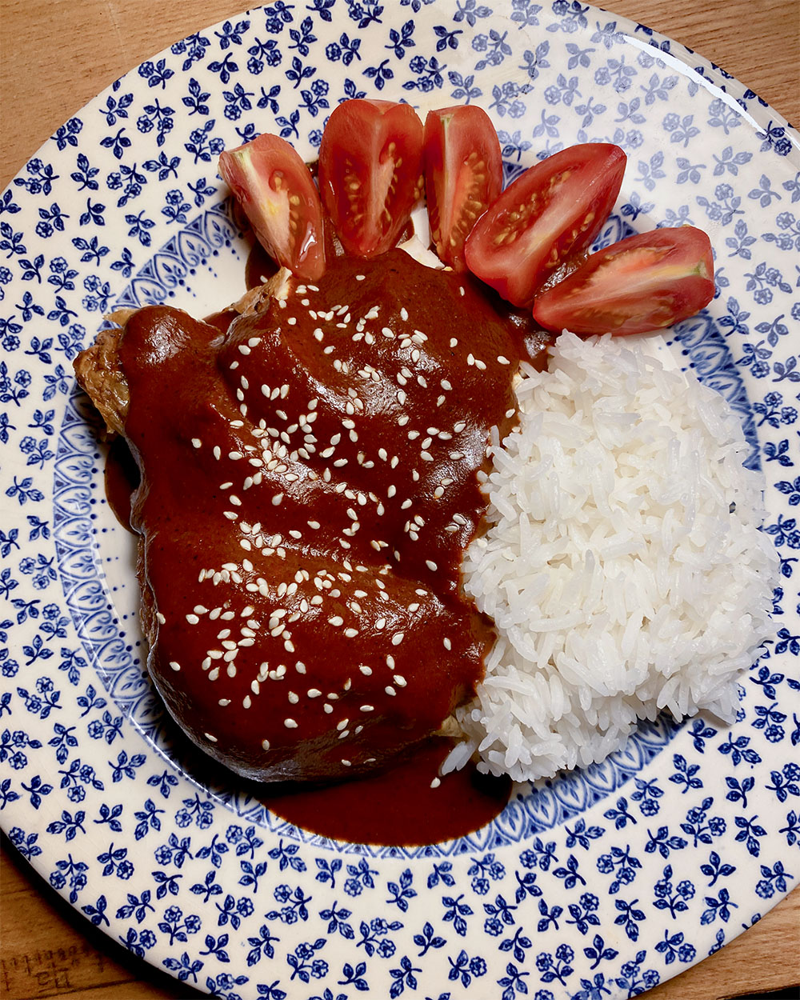

October 30th, 2022
Roasted Chicken Stock & Shio Ramen
I put my recent chicken carcasses to use today to make some homemade chicken stock. I used two whole bodies, plus a fresh chicken neck and bones from some thighs. For veggies, I used some carrots, celery, onions, and some fennel stalks and corn cobbs that I had stashed in the freezer over the summer. I let the stock simmer for around 4 hours uncovered and it came out very rich. Suyoung made us some Shio Ramen for dinner with the chicken thighs, and I still have two extra quarts of stock for future uses!
October 24th, 2022
My Grandmother's Cabbage
This dish is a classic at the Delaney family Thanksgiving. It's also one of my favorite comfort meals. It's both sweet and savory. Purple cabbage gets stewed down with granny smith apples, lemon juice, butter, and brown sugar until it melts in your mouth. It's my grandmother's recipe, but every woman in the family makes it slightly different. I love that.
Mine, of course, tastes most like my mom's. I made it on this cold, rainy October monday.
October 23rd, 2022
Sunday Roast
Chicken night! This lady got a simple treatment, Ã la Martha Stewart. Inside the cavity I placed a bundle of fresh rosemary and sage and an entire lemon. Before going into the oven, she got massaged with all over butter and then was roased over a bed of onions. I made gravy from the onions and drippings, and served alongside some brown-butter garlic mashed potatoes. May she rest in peace.
October 22nd, 2022
Market Sights
Today was the perfect fall day. I picked up the usuals at the market, including some beautiful blue heirloom eggs, and just enjoyed the sights.
October 16th, 2022
Rick Martinez's Mole


Rick Martinez inspired us to try making mole for the first time at the food festival last weekend. I followed his recipe for Mole Sencillo, but added some of the spices he used at his demonstration, similar to the ones in his Mole Negro recipe. To find as fresh dried peppers as possible, we ventured to Kaluystan's in Murray Hill. Holy smokes- that place is amazing. They have pretty much every spice you would ever need, including a powered version of almost every fruit and vegetable to exist. We ended up going with a combination of ancho, guajillo, and cascabel chiles. We were also able to find avocado leaves, which Rick describes as a fruitier version of bay leaves. Since I am gluten-free, we subbed out the animal crackers for gluten-free vanilla wafers. We learned at the food festival that you can really adapt a mole to what is in your pantry! It turned out incredible, and so warming. An important step I took to make the mole smooth was to strain it using a fine mesh strainer after blending. Maybe this wouldn't be needed, though, if you have a strong blender than me.
October 15th, 2022
Market Breakfast: Smoked Mussels with Custardy Scrambled Eggs
Today, the market had these delicious smoked mussels. The fishmonger recommended having them with some scrambled eggs, so we got home and did just that. I also found my favorite tender mustard greens, which I dressed simply with some lemon juice and olive oil.
October 9th, 2022
Brothy Veggies & Whole Fried Bass at Falansai
Suyoung and I, with our friends, maintain this massive collaborative Google Maps list with every single restaurant we want to try in the city- it currently features 134 restaurants and grows every week! It is meant to inspire us in those moments when we have been out and about all day and realize we're totally starving and have absolutely no idea where to eat. Because decision paralysis is real, and unfornately, so is bad food in NYC.
Anyway, it finally came in handy today! We had been thrifting in Bushwick, and decided to visit Falansai (shout out to Shreya for saving it to the list) after discovering they had a whole fried fish on the menu. We are currently eating our way through every whole-fish-dish in the city- stay tuned for an official ranking. It made the cut! It was perfectly tender, served on top of a bed of rich creamy curry. The standout of the meal, however, was a simple dish of market vegetables served in their house pho broth. Oh my god, the broth was so decadent, and really hit the spot on a cold fall day.
October 8th, 2022
The New York Times Food Festival!
This weekend my family went to the New York Times Food Festival to celebrate my mom's birthday. So many of my favorite chefs were there! I could go on and on about it so I'll just keep it short. Eric Kim and Maangchi demonstrated kimchi making and they were absolutely hilarious. We also saw Rick Martinez demonstrate how to cook mole with Melissa Clark, Priya Krishna and Stephen Satterfield discussed diversity in the food industry, the cast and producers talked about The Bear, and Ina Garten spoke about her newest cookbook (and yes- Jeffrey was present in the crowd). Since I couldn't bring my entire cookbook collection with me, I collected signatures on a spare wooden spoon.
October 7th, 2022
Nautral Wine, Foie Gras, and Escargot at Café Paulette
My sister was in town this weekend so we celebrated with a truly decadent meal at our favorite restaurant, Café Paulette. We started with a bottle of natural rosé while we waited for our table to be ready. It was super salty and pretty dark, almost like a chilled red. Yummmm. For dinner, we shared the escargot and foie gras special, and I tried not to think about my credit card balance. For entrées, I had the duck confit, Suyoung had the ratatouille which was stuffed inside an entire tomato, and Jackie had my favorite, the uber pepper-y steak frites. Bon apetit!
October 2nd, 2022
Rainy Days are for Braising
This weekend was super cold and rainy thanks to the hurricane in Florida. But it was a great occasion for our first braise of the season. We followed Alison Roman's recipe for tangy braised short ribs and they were sooooo good. They cooked in the oven for three hours and literally melted in our mouths.
October 1st, 2022
Breakfast via the Fort Greene Farmer's Market
Today we braced the rain and followed our usual Saturday morning routine of venturing to the Fort Greene farmers market. The highlight: these beautiful Concord grapes! Holy moly, they tasted just like grape candy, but with a nice tart finish. I also bought a beautiful bunch of beets, which of course means we had Sautéed Beet Greens for breakfast.